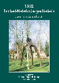

> publicaties > 1302: een Heel-Nederlandse
geschiedenis

De Guldensporenslag van 1302 is daarom ongetwijfeld
een Heel-Nederlands feit. De slag zelf vond plaats in Kortrijk, nu
West-Vlaanderen, maar uit heel wat hertogdommen, graafschappen en overige
gebieden van de Nederlanden stamden de actoren bij deze strijd.
Strijders
aan Vlaamse zijde kwamen uit Namen in het Walenland zoals Gwij en Jan, en uit
Gulik tussen Rijn en Maas, en nu in Duitsland, kwam Willem, uit het Zeeuwse
Renesse kwam Jan, er waren ook Robrecht van Bethune, Robrecht van Cassel, e.a.
Aan Franse zijde vinden we Jean de Lens, nu in Artesië, Robert d'Artois zelve,
Godevaert van Brabant, e.a. Tijdens de jaren vooraf en ook daarna werd veel
beslecht in steden en plaatsen, die thans tot Frans-Vlaanderen behoren, zoals
Dowaai, Bouvines, de Pevelenberg, Cassel, Rijsel, Bethune, e.d.m.
"1302
Een heel-Nederlandse geschiedenis" past in het kader van het belangstellingsveld van de
Vereniging/Stichting Zannekin, die ook haar bijdrage wil leveren tot de
herdenking van een voor de historische Nederlanden onmiskenbaar belangrijke
gebeurtenis.
Deze
publicatie werd geschreven door Leo Camerlynck, uit Ukkel bij Brussel,
vicevoorzitter van de vereniging/stichting Zannekin. Aan dit werk verleenden hun
medewerking: Maurits Cailliau, uit Ieper, secretaris van Zannekin, Jean Hubert
van Tongeren, uit Maarssen bij Utrecht, bestuurslid van Zannekin, en Aloys van
den Akker, uit Ukkel, voorzitter van de Ukkelse Foto- en Diaclub Pallieter.
|
omvang
|
80 paginas |
|
ISBN
|
|
|
prijs
|
5 € |